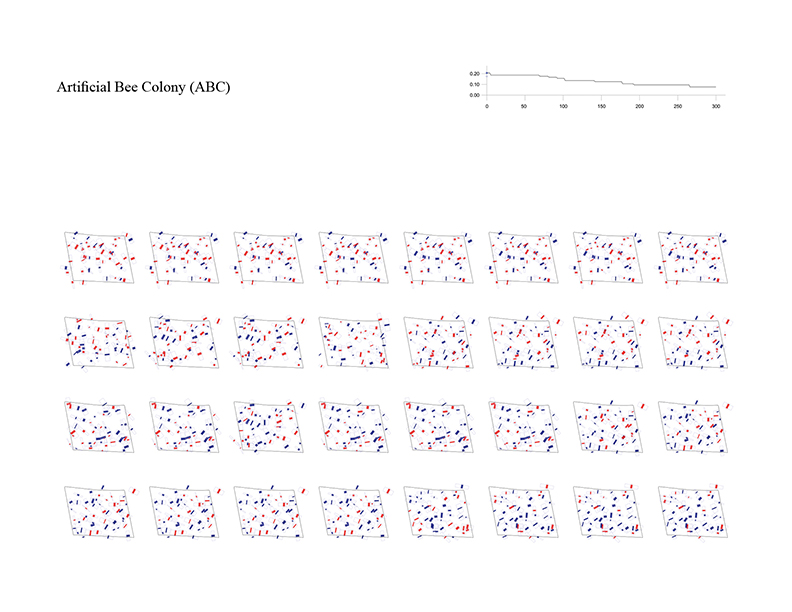

Building layout problem has long been an important issue not only in architectural design but also in computer-aided architectural design (CAAD) and computational design (CD). This problem has evolved into design issues that respond to the social demand of highly complex variables along with site information and architectural regulations. As urbanization progresses, the emergence of large-scale complexes and high-rise apartments is prompting this building layout problem into a more difficult problem to be solved by hand sketch or simple drafting tools. In order to solve this problem, various approaches using various algorithm characteristics are possible. In order to solve these complex problems, it is ultimately necessary to set up a multi-objectives optimization algorithm, but in this experiment, we start our experiments from single-objective optimization algorithms to analyze the performance and characteristics of each algorithm by framing the problem with a single objective function.
Mega-scale Apartments Complexes in Seoul
Overall Concept of Optimization for Building Layout
The optimization process for the building layout begins with setting up a site boundary and constraints. The process of setting constraints that meet the legislation and design conditions, such as the minimum and maximum length, depth, height and angle that each building can have, must be preceded. In this experiment, the following values were set as constraints.
Floor Height = 3 (m)
Building to Land Ratio = 0.5
Floor Area Ratio = 2.5
Pitch of Buildings (Front) = 0.5
Side Distance of Buildings = 10 (m)
min and max Width = 5 (m), 50 (m)
min and max Depth = 5 (m), 20 (m)
min and max Floors = 5, 40
min and max Angle = 0, 90
Number of Buildings = 50
Population Size = 40
Iterations = 300
Fitness

